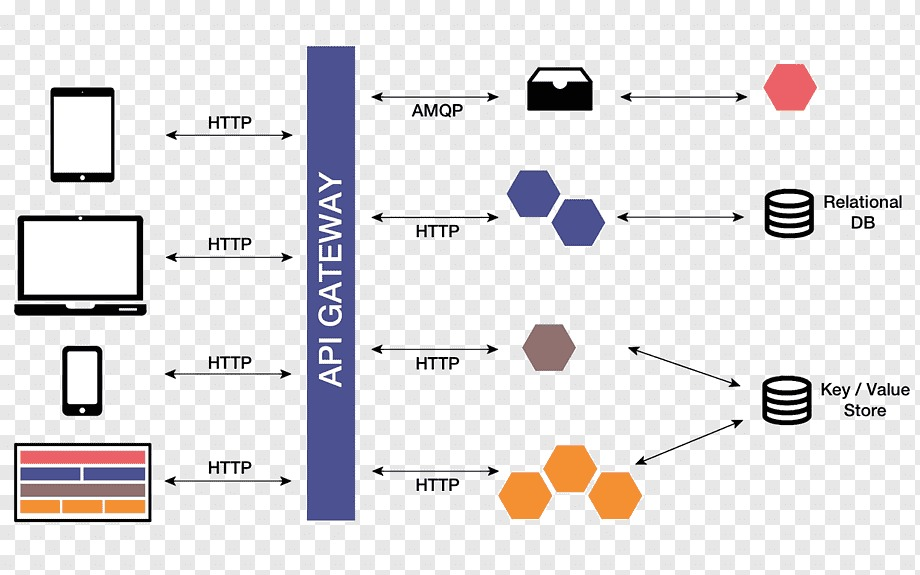

Lineas
Existen dos formas para crear una linea separadora horizontal y una unica forma para crear una linea separadora vertical

Existen dos formas para crear una linea separadora horizontal y una unica forma para crear una linea separadora vertical